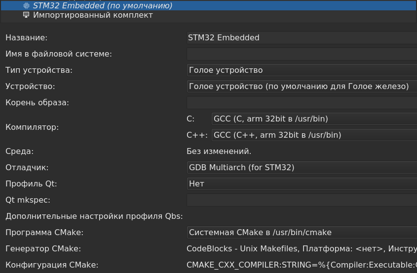

На 2022 год информация о том, как настраивать QtCreator в виде embadded IDE для программирования и отладки STM32 очень разрозненна и неоднозначна. Здесь собираются сведения о том, что нужно установить и что где надо прописать на примере Debian Linux 11.
Установка пакетов
Для разработки потребуются следующие пакеты:
Среда QtCreator устанавливается с официального сайта qt.io. В данном тексте используется QtCreator v.5.13.1. Эта версия QtCreator несколько устарела (примерно 2019 год), но умельцы настраивали QtCreator для работы с STM32 и в 2011 году.
Вроде как после установки этих пакетов должен стать доступен бинарник:
arm-none-eabi-gdb
Но его в данных пакетах почему-то нет. Неактуально, похоже теперь все надо делать через gdb-multiarch.
Настройка openocd
Программа openocd - это надстройка над дебаггером gdb, позволяющая организовать отладку различных контроллеров.
Для того, чтобы openocd видел железо, надо прописать следующие правила в файл /etc/udev/rules.d/51-arm-development.rules (если такового или похожего нет, то его надо создать). Правила позволят пользователю, под которым работает разработчик, получать доступ к оборудованию по USB.
Примеры:
#Stellaris/Tiva Launchpad ICDI
SUBSYSTEM=="usb", ATTR{idVendor}=="1cbe", ATTR{idProduct}=="00fd", MODE="0600", OWNER="your_username"
#ST-Link/v2
SUBSYSTEM=="usb", ATTR{idVendor}=="0483", ATTR{idProduct}=="3748", MODE="0600", OWNER="your_username"
#Segger J-Link
SUBSYSTEM=="usb", ATTR{idVendor}=="1366", ATTR{idProduct}=="0101", MODE="0600", OWNER="your_username"
В данном коде надо не забыть вместо your_username написать имя желаемого пользователя.
Возможно, что вместо вышеуказанных строк надо написать так (пример для STLink v.2):
SUBSYSTEMS=="usb", ATTRS{idVendor}=="0483", ATTRS{idProduct}=="3748", \
MODE="660", GROUP="plugdev", TAG+="uaccess", ENV{ID_MM_DEVICE_IGNORE}="1", \
SYMLINK+="stlinkv2_%n"
Похоже, что такая настройка даст доступ всем пользователям к вставленному устройству.
Перед запуском QtCreator, надо проверить запуск openocd. Запуск осуществляется следующей командой:
openocd -f /usr/share/openocd/scripts/interface/stlink-v2.cfg -f /usr/share/openocd/scripts/target/stm32f1x.cfg
В ответ на эту команду, возможно, появится два предупреждения, приводящих к ошибке запуска:
WARNING: interface/stlink-v2.cfg is deprecated, please switch to interface/stlink.cfg
Warn : UNEXPECTED idcode: 0x2ba01477
Error: expected 1 of 1: 0x1ba01477
Первое предупреждение исправляется указанием файла stlink.cfg вместо файла stlink-v2.cfg. Однако предупреждение и ошибка с неправильным idcode останется. Данная ошибка возникает, если используется китайская реплика Blue Pill. Для ее устранения можно отредактировать файл /usr/share/openocd/scripts/target/stm32f1x.cfg. В начале этого файла, после директив source, можно добавить строку:
set CPUTAPID 0x2ba01477
После этого исправления, openocd можно гарантированно запустить командой:
openocd -f /usr/share/openocd/scripts/interface/stlink.cfg -f /usr/share/openocd/scripts/target/stm32f1x.cfg
Если все настроено правильно, этот запуск можно делать от обычного пользователя, не от root. При успешном запуске в консоль будет выдано примерно следующее:
Open On-Chip Debugger 0.11.0-rc2
Licensed under GNU GPL v2
For bug reports, read
http://openocd.org/doc/doxygen/bugs.html
Info : auto-selecting first available session transport "hla_swd". To override use 'transport select <transport>'.
Info : The selected transport took over low-level target control. The results might differ compared to plain JTAG/SWD
Info : Listening on port 6666 for tcl connections
Info : Listening on port 4444 for telnet connections
Info : clock speed 1000 kHz
Info : STLINK V2J39S7 (API v2) VID:PID 0483:3748
Info : Target voltage: 2.434086
Info : stm32f1x.cpu: hardware has 6 breakpoints, 4 watchpoints
Info : starting gdb server for stm32f1x.cpu on 3333
Info : Listening on port 3333 for gdb connections
Данная проверка будет гарантировать то, что последующая настройка OpenOCD в среде Qt Creator будет вызываться без ошибок.
Настройка среды Qt Creator
Далее настройка происходит примерно так, как написано в статье:
https://github.com/0xebef/qube
В Qt Creator надо:
1. Добавить компиляторы языков C и C++ из состава gcc-arm-none-eabi на вкладке Комплекты - Компиляторы, если их среда автоматически не увидела. Компиляторы располагаются:
2. Активировать плагин Bare-Metal (Голое железо) в меню Справка - О модулях. Перегрузиться.
3. В разделе Устройства во вкладке Bare Metal настроить/добавить OpenOCD.
-f /usr/share/openocd/scripts/interface/stlink.cfg -f /usr/share/openocd/scripts/target/stm32f1x.cfg
или без указания полного пути
-f interface/stlink.cfg -f target/stm32f1x.cfg
такая конфигурация позволит автоматически запускаться openocd.
set remote hardware-breakpoint-limit 6
set remote hardware-watchpoint-limit 4
set mem inaccessible-by-default off
monitor arm semihosting enable
monitor reset halt
load
monitor reset halt
monitor reset halt
4. В разделе Устройства во вкладке Устройства добавить устройство Голое устройство с типом Голое железо. Тип сервера GDB - OpenOCD.
5. В разделе Комплекты во вкладке Отладчики добавить отладчик, назвав его GDB ARM none EABI или GDB Multiarch (for STM32), и указав бинарник /usr/bin/gdb-multiarch, если среда Qt Creator не обнаружила его автоматически.
6. В разделе Комплекты во вкладке Комплекты создать комплект с названием STM32 Embedded. Настройки приведены на скриншоте:

Не забыть выставить данный комплект как комплект по-умолчанию.
Настройка среды сборки QBS в Qt Creator
Действия далее не проверялись. Для их выполнения необходима установленная бесплатная проприетарная среда STM32CubeIDE.
По информации на 2014 год действия следующие:
По информации на 2020 год действия можно выполнять согласно следующей видео-инструкции (на русском):
Программирование микроконтроллера STM32F4 в Qt Creator
Но тогда QBS вроде как не используется. Все сводится к тому, что в STM32CubeIDE создается проект, использующий makefile. Затем он полностью копируется в другой каталог, и данный проект